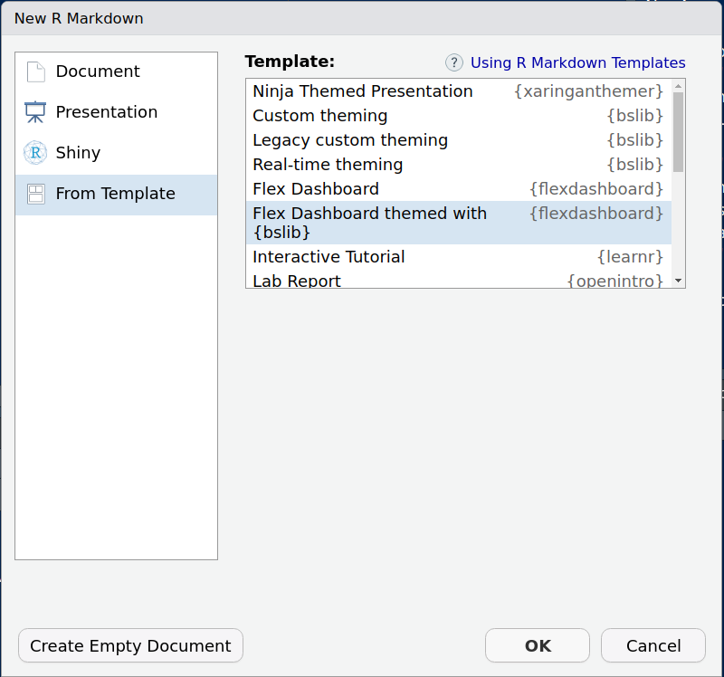
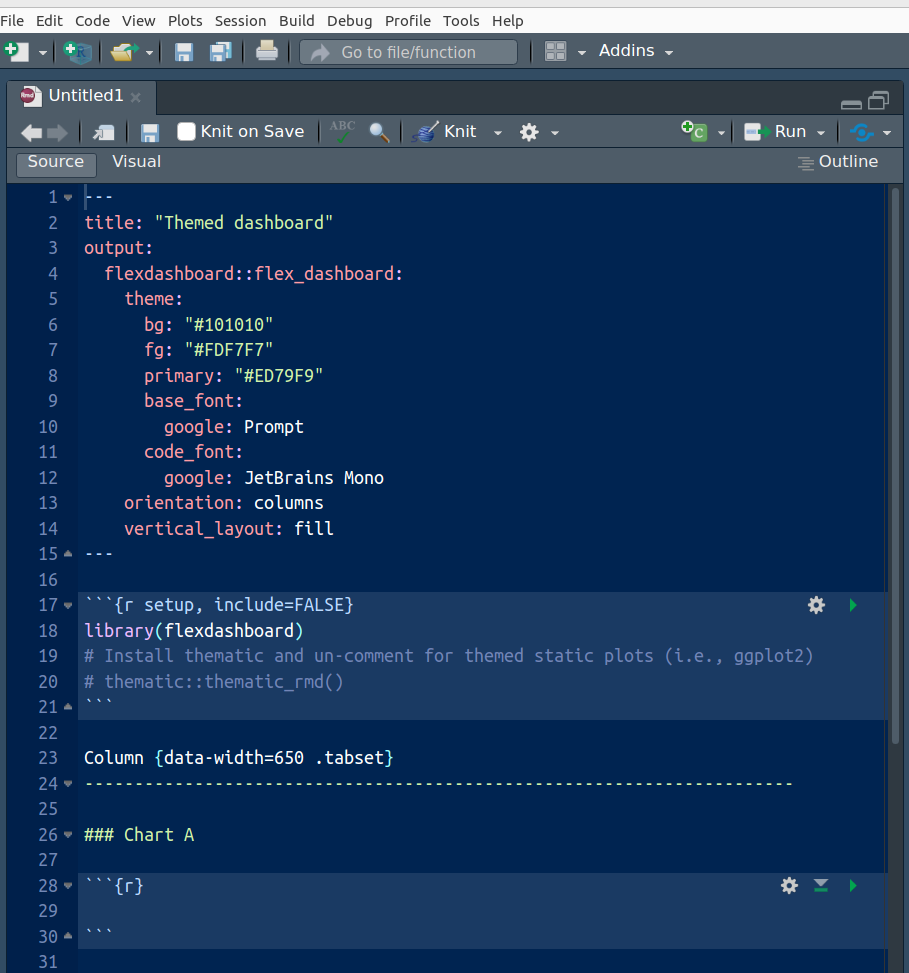
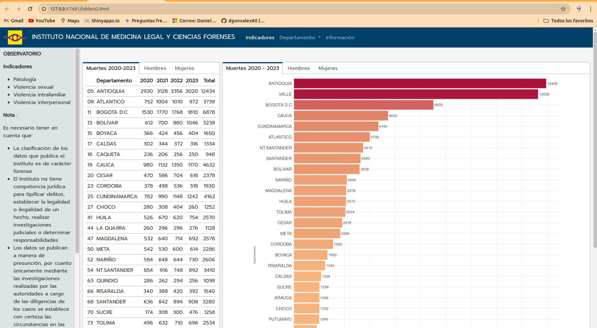

Unidad 1.1
dgonzalez
Tableros
Introducción
Los tableros o dashboards en ciencia de datos son herramientas visuales que permiten a los usuarios monitorear, analizar y comprender grandes cantidades de datos de manera rápida y efectiva. Estos tableros suelen presentar información clave de manera clara y concisa, a través de gráficos, tablas y otros elementos visuales interactivos.
Los tableros en ciencia de datos son útiles en una variedad de contextos, desde el seguimiento de métricas empresariales hasta el análisis de tendencias en investigación científica. Permiten a los usuarios explorar datos, identificar patrones y tomar decisiones informadas basadas en la información presentada.
En la actualidad, existen muchas herramientas y plataformas que facilitan la creación de tableros interactivos, lo que ha contribuido a su creciente popularidad en el campo de la ciencia de datos. Estos tableros no solo son útiles para los analistas de datos y científicos, sino también para los tomadores de decisiones y otros usuarios que deseen comprender mejor los datos y la información que representan.
Herramientas
En la construcción de tableros o dashboards en ciencia de datos, se utilizan diversas herramientas que permiten crear visualizaciones interactivas y presentaciones de datos. Algunas de las principales herramientas empleadas son:
Tableau:
Es una plataforma líder en la creación de tableros interactivos. Permite conectar diferentes fuentes de datos, crear visualizaciones avanzadas y compartir los tableros de forma segura.
Power BI:
Desarrollado por Microsoft, Power BI es una herramienta poderosa para la visualización de datos y la creación de informes interactivos. Permite conectar a una amplia variedad de fuentes de datos y compartir los resultados en línea.
QlikView/Qlik Sense:
Qlik ofrece dos herramientas, QlikView y Qlik Sense, para la visualización de datos. Ambas permiten la creación de tableros interactivos y el análisis de datos en tiempo real.
Google Data Studio:
Es una herramienta gratuita de Google que permite crear informes y visualizaciones interactivas a partir de datos de Google y de otras fuentes. Permite compartir los informes de forma fácil y segura.
D3.js:
Es una biblioteca de JavaScript ampliamente utilizada para crear visualizaciones de datos dinámicas y personalizadas. Aunque es más técnica que las herramientas anteriores, ofrece un alto grado de flexibilidad y control sobre la visualización.
Plotly:
Es una biblioteca de Python (y otras lenguajes) que permite crear visualizaciones interactivas y elegantes. Puede integrarse fácilmente con otras herramientas como Dash para crear aplicaciones web interactivas.
R Project y RStudio
R: R es un lenguaje de programación y un entorno de software especializado en estadísticas y análisis de datos. Es de código abierto y se utiliza ampliamente en la investigación científica, la academia y la industria para tareas como modelado estadístico, visualización de datos, análisis de series temporales y mucho más. R cuenta con una amplia colección de paquetes que extienden su funcionalidad y lo hacen adecuado para una variedad de aplicaciones.
RStudio: RStudio es un entorno de desarrollo
integrado (IDE) para R que facilita la escritura, depuración y ejecución
de código R. Proporciona una interfaz gráfica de usuario que incluye un
editor de código, una consola interactiva para ejecutar comandos,
herramientas para visualizar datos y resultados, y facilidades para
organizar proyectos. RStudio también es de código abierto y está
disponible en versiones gratuitas y de pago. Es ampliamente utilizado
por la comunidad de usuarios de R debido a su facilidad de uso y sus
numerosas funciones.
Shiny:
Shiny es un paquete de R que permite crear aplicaciones web interactivas directamente desde R.
Con shiny, puedes diseñar interfaces de usuario interactivas y dinámicas que permiten a los usuarios explorar y analizar datos de manera flexible. Puedes combinar gráficos, tablas, controles de entrada y texto descriptivo en un solo tablero interactivo.
shiny utiliza una arquitectura reactiva, lo que significa que los elementos del tablero pueden actualizarse automáticamente en respuesta a las acciones del usuario o a los cambios en los datos subyacentes. Esto hace que sea fácil crear tableros que proporcionen una experiencia de usuario fluida y dinámica.
Además, Shiny ofrece una amplia gama de funciones y controles para personalizar el aspecto y la funcionalidad de tus tableros. Puedes integrar gráficos creados con ggplot2, plotly u otras librerías de visualización en tus aplicaciones Shiny, lo que te permite crear tableros altamente personalizados y visualmente atractivos.
En resumen, Shiny es una excelente opción si estás buscando crear tableros interactivos y aplicaciones web basadas en R. Con su flexibilidad y potencia, Shiny te permite crear tableros que se adapten a una variedad de necesidades y requisitos.
flexdashboard:
flexdashboard es un paquete de R que permite crear tableros interactivos y flexibles utilizando R Markdown. Con Flexdashboard, puedes combinar texto narrativo, gráficos interactivos, tablas y otros elementos interactivos en un solo documento que se puede visualizar como una página web interactiva.
Una de las características principales de flexdashboard es su capacidad para adaptarse a diferentes tamaños de pantalla y dispositivos, lo que permite crear tableros que se ven bien en computadoras de escritorio, tabletas y teléfonos móviles. Esto se logra mediante el uso de diseños flexibles y responsivos que se ajustan automáticamente al tamaño de la pantalla del usuario.
flexdashboard también ofrece una amplia gama de opciones de personalización, lo que te permite controlar el diseño, los estilos y la interactividad de tu tablero. Puedes agregar controles de entrada como deslizadores, botones y menús desplegables para permitir a los usuarios filtrar y explorar los datos de manera interactiva.
Además, flexdashboard es compatible con una variedad de librerías de visualización en R, como ggplot2, plotly y leaflet, lo que te permite crear gráficos avanzados y mapas interactivos en tu tablero. También puedes integrar widgets de HTML y JavaScript para agregar funcionalidades adicionales a tu tablero.
Es una herramienta poderosa para crear tableros interactivos y flexibles en R. Con su capacidad para combinar texto narrativo, gráficos interactivos y controles de entrada en un solo documento, flexdashboard te permite crear tableros informativos y visualmente atractivos que se adaptan a las necesidades de tus usuarios.
ggplot2:
Aunque ggplot2 se utiliza principalmente para crear gráficos estáticos, se puede combinar con otros paquetes como plotly o ggplotly para hacer gráficos interactivos que pueden ser integrados en un tablero.
plotly:
Plotly es una librería que permite crear gráficos interactivos en R. Se puede utilizar junto con Shiny para crear tableros interactivos o de forma independiente para crear visualizaciones interactivas.
Leaflet:
Para mapas interactivos, Leaflet es una excelente opción. Permite crear mapas interactivos basados en capas con datos geoespaciales.
DT:
Para tablas dinámicas, el paquete DT proporciona una forma sencilla de crear tablas interactivas que permiten ordenar, filtrar y buscar datos de manera dinámica.
highcharter:
Este paquete permite crear gráficos interactivos utilizando la biblioteca Highcharts en R, lo que proporciona una amplia gama de opciones de visualización.
leaflet.extras:
Proporciona funciones adicionales y complementos para Leaflet, lo que permite ampliar las capacidades de los mapas interactivos.
crosstalk:
Este paquete permite la comunicación entre widgets en un tablero de Shiny, lo que permite que los datos se filtren dinámicamente en función de las selecciones del usuario.
Tableros en R
A continuación se proponen los siguientes pasos para la construcción de un tablero con ayuda de R/RStudio y Github
- Para la construcción del tablero debemos de contar con:
- Tener instalado R y RStudio
- Tener instaldo git
- Tener una cuenta en github
- Se crea una cuenta en GitHub mediante los siguientes pasos:
- Abre tu navegador web y ve a la página principal de GitHub: github.com.
- En la página principal, haz clic en el botón Sign up en la esquina superior derecha.
- En la página de registro, completa los siguientes campos:
- Username: Elige un nombre de usuario único que desees utilizar en GitHub.
- Email address: Ingresa tu dirección de correo electrónico.
- Password: Elige una contraseña segura para tu cuenta.
- Haz clic en el botón verde Create account.
- En la siguiente pantalla, elige el plan que deseas utilizar:
- Free: Un plan gratuito con funciones básicas.
- Pro: Un plan de pago con funciones adicionales para usuarios profesionales.
Después de seleccionar tu plan, completa el proceso de verificación (si es necesario). Una vez completado el proceso de verificación, habrás creado tu cuenta de GitHub y podrás empezar a utilizarla para gestionar tus proyectos de software, colaborar con otros desarrolladores y mucho más.Recuerda que es importante elegir un nombre de usuario y una contraseña seguros para proteger tu cuenta.
- Crea un repositorio en GitHub
- Inicia sesión en tu cuenta de GitHub en github.com.
- En la esquina superior derecha de la página, haz clic en el signo más (+) y selecciona “New repository” en el menú desplegable.
- En la página “Create a new repository”, completa la siguiente
información: Repository name: Ingresa un nombre para tu repositorio.
Este nombre debe ser único dentro de tu cuenta de GitHub.
- Description: (Opcional) Proporciona una breve descripción de tu repositorio.
- Visibility: Selecciona si deseas que tu repositorio sea público (visible para todos) o privado (visible solo para ti y las personas con las que decidas compartirlo). Ten en cuenta que los repositorios privados están disponibles en planes de pago. Initialize this repository with: Puedes elegir si deseas incluir un archivo README, un archivo gitignore y/o una licencia. Estos archivos son útiles para comenzar un proyecto y son recomendados, especialmente el README.
- Template: (Opcional) Puedes seleccionar un template específico si tu repositorio se basa en un proyecto existente.
Haz clic en el botón verde “Create repository”.
Clonar el repositorio creado
Crear las carpetas
Con el fin de ordenar los archivos contenidos en el proyecto se proponen la creación de los siguientes carpetas:
- /img . Para almacenar las imagenes como el logo.png
- /data . Para guardar las bases de datos contenidas en el observatorio de violencia en formato xlsx
- /map . Para guardar los archivos .shp que contienen los mapas
- /R . Para almacenar los scripts para procesar las bases, generación de funciones y graficos
- Abre RStudio e instala el paquete flexdashboard, para habilitar dentro de los formatos una plantilla
File/R Markdown

From Template / Flex Dashboard themed with bslib

Plantilla 
- Procedemos a personalizar la plantilla suministrada a nuestro gusto y necesidades
La plantilla esta conformada por dos partes: * Encabezado o YAML, donde se definen las principales caracteristicas del tablero * Tablero, donde se ubican los codigos de los gráficos
En el encabezado realizamos los siguientes cambios propuestos
---
title: "**INSTITUTO NACIONAL DE MEDICINA LEGAL Y CIENCIAS FORENSES**"
output:
flexdashboard::flex_dashboard:
logo: "img/logo.png"
theme:
bg: "#FFFFFF"
fg: "#000000"
primary: "#00416A"
base_font:
google: Prompt
code_font:
google: Oswald
orientation: columns
vertical_layout: scroll
runtime: shiny
---
Se realizan los siguientes cambios a la plantilla original:
- Se cambian los colores de:
- fondo bg “#FFFFFF” colorblanco
- color de las letras: fg “#000000” color negro
- color primario primary “#00416A” color azul oscuro
- Se cambia el tipo de fuente por Oswald
- Se adiciona la opción de scroll
- Se adiciona runtime: shiny
- Con el fin de no congestionar el documento, es decir hacerlo muy extenso se construyen archivos de código R que se corren dentro del tablero
01-instalar-paquetes.R02-importasr-bases-datos.R03-ajuste-variables.R04-generacion-tablas.R05-bases-mapas.R06-bases-por-departamento.R07-funciones-graficos.R
Nota : el código anterior lo puede consultar en : https://github.com/dgonxalex80/tableroIML/tree/main/R
Los anteriores scripts son ejecutados en el primer bloque del tablero
Ahora si, a construir el tablero
